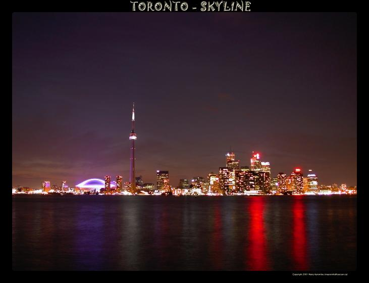
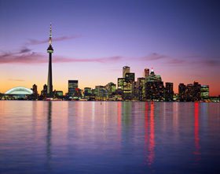
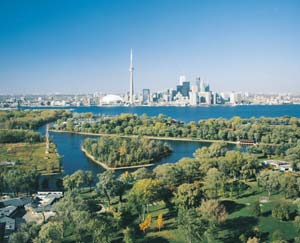
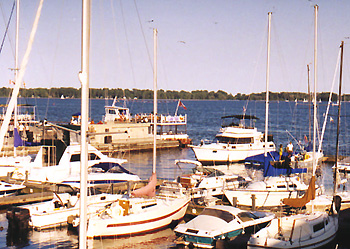

|
Toronto Perl Mongers |
|  |
|
Executive SummaryToronto.pm is pleased to provide a bid for YAPC::NA 2004. The crucial details are: Date and Duration
Venue
Accommodations
Meals and Catering
Projected Budget
Toronto is a fantastic tourist city
Strong conference organizing committeeThe Bid In DetailIntroduction The biggest selling point to a YAPC::NA in Toronto is Toronto itself. The Greater Toronto Area has a population of around 6 million, and for the past decade the United Nations has ranked Toronto as the most multicultural city on Earth. It is remarkably vibrant on every dimension: the financial district bustles as one of the world's financial capitals; the array of ethnic neighbourhoods make you feel like you're visiting a continent, not a city; the street-life -- restaurants, shops, pedestrian concourses -- runs on for miles (well, kilometres); enough high culture and pop culture that you'd never run out. The proposed facility, University of Toronto, St. Michael's College, is located in the heart of downtown. A large variety of shops and restaurants are withing easy walking distance. Convenient and easy public transport to major attractions is available. Renting a car is not necessary. Map of University of Toronto downtown campus. The large red circle on the right marks St. Michael's College. The U of T web site allows you to click on the buildings for information. FacilitiesPrices are in Canadian dollars. The quoted costs are for budgetary purposes only. We should be able to negotiate better terms as a package deal. Auditorium: Sam Sobara Room, seats 380 persons (250 in banquet mode), $500 per day. Common Area: A common area outside Sam Sobara Room is available. Meetings rooms: Theatre Alumni 100, 300 persons, $500 per day. Theatre Alumni 400, seats 200 persons, $500 per day. Other rooms capable of holding 60 or 40 people are also available. Terminal room: Available in the library, computers will be included, cost will be about $200 per day. Storage room: Several classrooms are available including Brennan 203, $250 per day. See the budget spreadsheet for more details. (MS Excel format, but easily opened in Gnumeric.) See the budget summary for a quick text view of the top-level budget summary. Selected PhotosDorm (on left) and driveway to University of St. Michael's College Central Courtyard of University of St. Michael's College A building on St. Michael's campus (venue rooms within) Yet Another building (venue rooms within) Same room, seen from the front Central Quadrangle of St. Michael's campus Main assembly room (seats 380 in theatre mode) -- way too big, and blurry CateringThe following catering is available from the college. Continental Breakfast $5.87 Morning break (coffee, tea) $1.50 Afternoon Break (Coffee, tea, cookie, soft drink) $2.50 Lunch, deli buffet, $9.50 Dinner $25 - plated 3 course, salad, main, dessert, coffee, tea If we have more than 250 attendees (this is our plan!) we will hold the dinner at another facility. Options under consideration include dinner on a Toronto Island cruise boat.   AccommodationThe Sam Sobara residence is only steps away from the meeting rooms. The building is new and very comfortable. CDN$55 per night (includes tax), a/c, single occupancy. In-room wired Internet (ethernet) at $10 per week. Check-in desk open 6am to midnight 7 days a week The University of St. Michael's College is in the middle of downtown. There are over a hundred hotels nearby in either walking or short trip distance. We will investigate if a group rate can be negotiated at an appropriate one nearby (e.g. 15 minute walk from the venue). Equipment: A/V NetworkWired Internet in all rooms. We will need our own Access Points. LCD projectors,3, @ $250 per day. P/A system will be provided by the college at a nominal cost or included in the price of the rooms. Currency ConsiderationsThe Exchange Rate
Using credit and debit cardsUS Credit and debit cards generally Just Work. Most banks are on the Cirrus and Plus networks for debit cards.
Using bank cards for ATM (aka Bank Machine) withdrawals
Using USD$ within Canada
Traveller's Cheques
TransportationToronto AttractionsOne of the biggest attractions to the city is just the atmosphere of it all. It is a city of neighbourhoods, and the "main streets" of each will dazzle you with everything that's going on. Planned fun activitiesPossibilities include:
Conference TeamToronto.pm has a large crew of people who are willing to put in considerable time and effort to organizer, produce and execute a YAPC::NA 2004 here in Toronto. More remarkably, many of our team are from outside Toronto, but eager to partticipate. Toronto.pm has been active this past year building good relationships with other nearby Perl Monger groups, such as Ottawa.pm, Montreal.pm, KW.pm (Kitchener/Waterloo, Ontario) and Buffalo.pm. Many people from these other groups have pledged their support.
|
{kind=link}
{kind=link}
{kind=link}
{kind=link}
{kind=link}
{kind=link}
{kind=link}
{kind=link}
{kind=link}